|
Introduction WIRE
HARNESS REPAIR GUIDELINES
|
WIRE HARNESS REPAIR
GUIDELINES
1.Overview using a repair wire and
connector
Make sure to identify the damaged
locations and cause, then decide on the repair method before
repairing or replacing the wire harness assembly.
-
-
Warning:
- Attempting
repairs without determining the location of the damage
can result in serious accidents.
2.Sections that cannot be repaired
using a repair wire and connector
Because work quality cannot be
guaranteed, repairs are not possible if the damaged location
falls under the following.
- Orange wiring marked "High Voltage" (hybrid
systems, etc.)
- High-voltage wiring that exceeds 8
mm2 (alternators, etc.)
-
Because it is difficult to identify the damaged
location when repairing wiring due to vehicle flooding or
fire, replace the wire harness assembly instead of making
repairs.
| Vehicle
flooding: |
Quality cannot
be guaranteed due to the possibility of corrosion
and rust |
| Vehicle
fires: |
Heat damage due
to fire reduces the wiring performance (flexibility
and conductivity rate) |
3.Guidelines for determining the
repair method according to damage type
Determine the repair method
according to the following "Damage Type List"
| Damage type |
Damaged component |
Description |
Wire harness assembly replacement |
Repair wire or connector
replacement |
Reason for recommended repairs |
|
|
Partial wire |
- |
○ |
○ |
Replacing the harness assembly is
recommended.
- If it is not possible to complete the
procedure according to instructions, it could be
impossible to guarantee quality
|
| Deformed terminal |
| 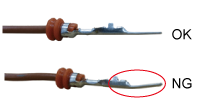 |
| Deformed tip |
|
Terminal |
Terminal is deformed, cannot guarantee
pressure |
○ |
○ |
Replacing the harness assembly is
recommended.
- If it is not possible to complete the
procedure according to instructions, it could be
impossible to guarantee quality
|
| Connector damage |
| 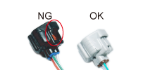 |
| Connector lock is damaged |
|
Connector |
Connector lock is damaged, connector cannot
be secured |
○ |
○ |
Replacing the harness assembly is
recommended.
- If it is not possible to complete the
procedure according to instructions, it could be
impossible to guarantee quality
|
| Deformed connector and
terminal |
| 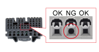 |
| Traces of foreign object insertion,
corners removed |
|
・Connector
・Terminal |
Terminal is deformed, cannot guarantee
pressure between terminals |
○ |
○ |
Replacing the harness assembly is
recommended.
- If it is not
possible to complete the procedure according to
instructions, it could be impossible to guarantee
quality
|
| Hole plug cracked |
| 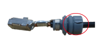 |
| Crack in hole plug |
|
Hole plug |
Crack in hole plug, cannot maintain
waterproofing |
○ |
○ |
Replacing the harness assembly is
recommended.
- If it is not possible to complete the
procedure according to instructions, it could be
impossible to guarantee quality
|
|
|
All wiring |
Higher than expected current in wiring,
cannot guarantee normal wiring
functionality |
○ |
× |
Replacing the harness assembly is
recommended.
- If it is not possible to complete the
procedure according to instructions, it could be
impossible to guarantee quality
|
| Discolored terminal |
| 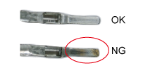 |
| Short circuit resulted in discolored
terminal |
|
・Terminal
・All wiring |
Higher than expected current in wiring, all
wiring damaged in relation to discolored
terminals |
○ |
× |
Replacing the harness assembly is
recommended.
- If it is not possible to complete the
procedure according to instructions, it could be
impossible to guarantee quality
|
| Corroded terminals(1) |
| 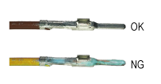 |
| Terminals corroded, resulting in
verdigris |
|
・Terminal
・All wiring |
All wiring damaged due to
corroded terminals, unable to guarantee normal wiring
functionality |
○ |
× |
Replacing the harness assembly is
recommended.
- If it is not possible to complete the
procedure according to instructions, it could be
impossible to guarantee quality
|
| Corroded terminals(2) |
| 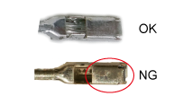 |
| Plating peeling due to
corrosion |
|
| Short circuit between
wiring |
| 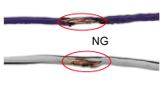 |
|
All wiring |
Short circuit between wiring, higher than
expected current in wiring, cannot guarantee normal
wiring functionality |
○ |
× |
Replacing the harness assembly is
recommended.
- If it is not possible to complete the
procedure according to instructions, it could be
impossible to guarantee quality
|
○:Repair possible X:Repair impossible
Other cases
- If both connectors need to be replaced in
an airbag that uses dual-type connectors, it is
recommended that replace them with the wire
assy.
-
- Notice:
-
- If
the wires are incorrectly connected, the
airbag system will not function
correctly.
|
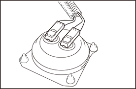 |
- To repair a wire with a cut harness loop
during a rescue, use the same wire as the vehicle
and a wire of equal or greater wire diameter, and
cut and replace the wire at a point where there is
no bending.Attach the new sticker in a visible
position.
|
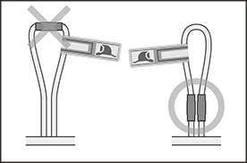 |
4.Requirements for repairs using
repair wire and connector
- Preparatory items required for wiring repair must
be available.
-
- Notice:
-
- Components
may be damaged if repaired without the appropriate
preparatory items.
- Must be possible to obtain the components
required for repairs.
-
- Notice:
-
- Work
quality may not be guaranteed if repaired without
the appropriate preparatory
items.
-
| Required components
: |
Connector with built-in repair wire,
connector, repair wire, sleeve, heat shrink
sleeve |
5.Precautions for repairs using a
repair wire and connector
- Avoid wiring repairs on curved sections.(Do not
repair)
-
- Notice:
-
- If a sleeve
or heat shrink sleeve is curved, quality cannot be
guaranteed because material properties make it
impossible to bend freely.(Impossible to restore
wiring to its original location)
- Curved sections result in folded wiring,
which can cause damage, resulting in secondary
malfunctions.
- It must be possible to restore the protective
material or clamps on the repaired sections of the wire and
secure the repair wire to the harness.
-
- Notice:
-
- If it is
not possible to restore the protective material or
clamp, interference or vibration could cause the
harness to break.
- Do not repair shielded wiring.
-
- Notice:
-
- After
repairs, shielded wiring performance cannot be
guaranteed.
- For wire repair of CAN and other communication
lines, make the untwisting as short as possible, and wrap
the wires with tape while twisting so that the distance
between the Hi/Lo wires is not separated.
-
- Notice:
-
- Untwisting
and separation between wires may degrade equipment
performance.
- Do not use bypass wiring between
connectors.
-
- Notice:
-
- The
ability of the twisted bus lines to resist
interference will be lost if bypass wiring
is used.
- Do not use a twisted pair of
wires for bypass wiring.
|
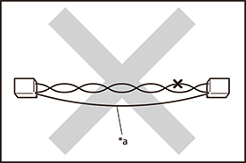 |
|
|
- Make sure there is more than 30 mm of
wiring above and below the cut wire to be repaired.
(Illustration A)
-
- Notice:
-
- This is to ensure
heat shrink sleeve waterproofing and
insulation properties.
|
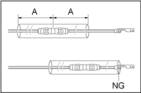 |
- When repairing multiple spots on the same
connector, ensure that neighboring wiring does not
overlap the repair locations.
-
- Notice:
-
- When not changing
the length of the wiring, it may not be
possible to restore protective materials or
clamps due to overlapping repair
locations.
|
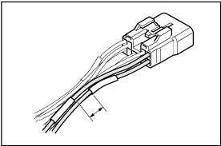 |
- When repairing wiring, cut the existing
wiring and repair wire with to the same
length.
-
- Notice:
-
- A
harness that is too long may break due to
vibration, resulting in a short
circuit.
Tension on the connector side
resulting from vibration can deform the
connector, causing insufficient pressure
and malfunctions.
|
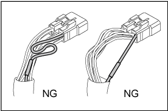 |